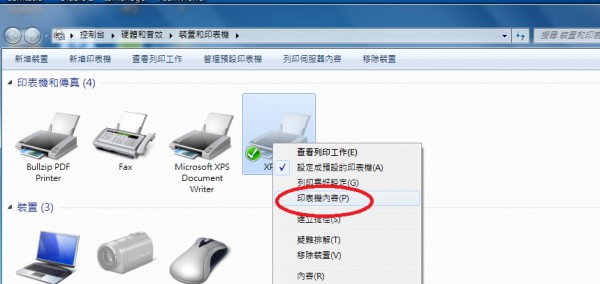
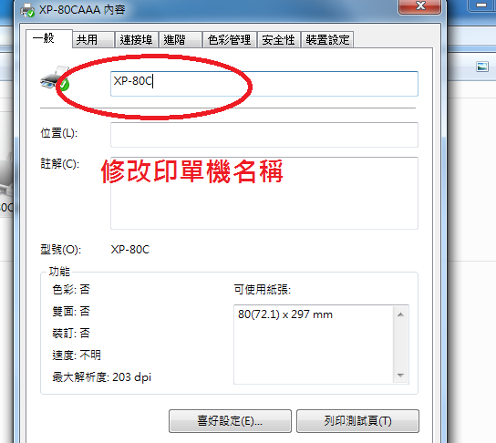

如何安裝兩台出單機?
1 個回答
必須在windows看到兩台印單機 才算成功安裝兩台
因為有可能您採用兩台同型號的印單機 名稱都一樣
安裝第二台又蓋過第一台
參考步驟如下
1.先刪除TP-260(滑鼠 右鍵 移除裝置)
2.安裝完第一台後
您必須先修改印表機名稱 比如 TP-2601
3.再裝第二台
裝完兩台後 在連接滬的地方 應該要有兩個接口
比如 USB0001 USB0002
分別對應到兩台不同的印單機
請參考圖片
如有問題再請提問
謝謝您

